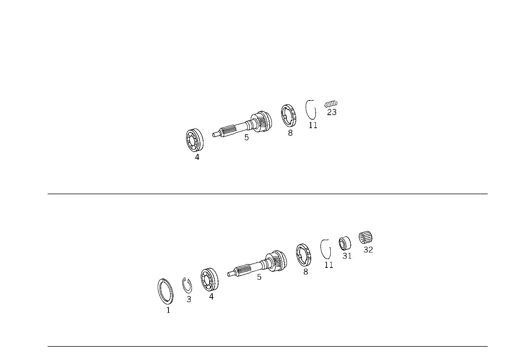

| № | Артикул | Название | Кол. | Примечание | Ограничение |
|---|---|---|---|---|---|
| 1 | A 123 994 03 35 | - Пруж. стопорное кольцо (SPRENGRING) | 1 | ||
| 3 | A 123 262 04 94 | - Пруж. стопорное кольцо (SPRENGRING) | 1 | ПОДШИПНИК НА ПЕРВИЧНОМ ВАЛУ | |
| 4 | A 006 981 66 25 | - Рад. шарикоподшипник (RILLENKUGELLAGER) | 1 | ПРИВОДНОЙ ВАЛ | |
| 5 | A 124 260 36 20 | - Приводной вал (ANTRIEBSWELLE) | 1 | ||
| 8 | A 123 262 01 34 | - Кольцо синхронизатора (SYNCHRONRING) | 1 | ЧЕТВЁРТАЯ ПЕРЕДАЧА | |
| 11 | A 123 262 01 93 | - пружина (FEDER) | 1 | ||
| 31 | A 126 262 00 51 | - Проставочное кольцо (ABSTANDSRING) | 1 | ОСЕВОЙ | |
| 32 | A 010 981 82 10 | - Игольчатый подшипник | - | ||
| 32 | A 012 981 76 10 | - Игольчатый подшипник (NADELLAGER) | 1 | ||
| 56 | A 202 262 00 05 | - Вторичный вал (HAUPTWELLE) | 1 | ||
| 59 | A 007 981 13 10 | - ПОДШИПНИК ИГОЛЬЧАТЫЙ | 1 | ШЕСТЕРНЯ ТРЕТЬЕЙ ПЕРЕДАЧИ | |
| 59 | A 007 981 14 10 | - Игольчатый подшипник (NADELLAGER) | 1 | ШЕСТЕРНЯ ТРЕТЬЕЙ ПЕРЕДАЧИ [402] БОЛЬШЕ НЕ ПОСТАВЛЯЕТСЯ | |
| 59 | A 014 981 79 10 | - ПОДШИПНИК ИГОЛЬЧАТЫЙ | 1 | ШЕСТЕРНЯ ТРЕТЬЕЙ ПЕРЕДАЧИ | |
| 62 | A 124 262 04 13 | - Шестерня (ZAHNRAD) | 1 | ||
| 62 | A 202 262 01 13 | - Шестерня (ZAHNRAD) | 1 | ТРЕТЬЯ ПЕРЕДАЧА | |
| 65 | A 123 262 01 93 | - пружина (FEDER) | 1 | ТРЕТЬЯ ПЕРЕДАЧА | |
| 68 | A 123 262 01 34 | - Кольцо синхронизатора (SYNCHRONRING) | 1 | ТРЕТЬЯ ПЕРЕДАЧА | |
| 71 | A 123 262 06 35 | - СИНХРОНИЗАТОР | - | ||
| 71 | A 202 262 01 35 | - СИНХРОНИЗАТОР | 1 | ТРЕТЬЯ И ЧЕТВЁРТАЯ ПЕРЕДАЧА | |
| 71 | A 123 262 03 35 | - Синхронизатор (SYNCHRONKOERPER) | 1 | ТРЕТЬЯ И ЧЕТВЁРТАЯ ПЕРЕДАЧА | |
| 71 | A 124 262 01 35 | - СИНХРОНИЗАТОР | 1 | ТРЕТЬЯ И ЧЕТВЁРТАЯ ПЕРЕДАЧА | |
| 74 | A 124 994 06 35 | - Стопорное кольцо (SICHERUNGSRING) | 1 | ПО НЕОБХОДИМОСТИ 1.2MM | |
| 74 | A 124 994 07 35 | - Стопорное кольцо (SICHERUNGSRING) | 1 | ПО НЕОБХОДИМОСТИ 1.3MM | |
| 74 | A 124 994 08 35 | - Стопорное кольцо (SICHERUNGSRING) | 1 | ПО НЕОБХОДИМОСТИ 1.4MM | |
| 77 | A 201 262 01 23 | - СКОЛЬЗ. МУФТА СИНХРОНИЗ. | 1 | ||
| 77 | A 202 262 01 23 | - Скользящая муфта (SCHIEBEMUFFE) | 1 | ТРЕТЬЯ И ЧЕТВЁРТАЯ ПЕРЕДАЧА | |
| 101 | A 007 981 15 10 | - Игольчатый подшипник (NADELLAGER) | 1 | ШЕСТЕРНЯ ВТОРОЙ ПЕРЕДАЧИ | |
| 101 | A 007 981 16 10 | - ПОДШИПНИК ИГОЛЬЧАТЫЙ | 1 | ШЕСТЕРНЯ ВТОРОЙ ПЕРЕДАЧИ | |
| 103 | A 124 262 01 12 | - Шестерня (ZAHNRAD) | 1 | ВТОРАЯ ПЕРЕДАЧА | |
| 106 | A 123 262 00 34 | - КОЛЬЦО СИНХРОНИЗАТОРА | - | ||
| 106 | A 124 262 00 34 | - Кольцо синхронизатора (SYNCHRONRING) | 1 | ВТОРАЯ ПЕРЕДАЧА | |
| 109 | A 123 262 02 93 | - пружина (FEDER) | 1 | ||
| 112 | A 123 262 04 35 | - СИНХРОНИЗАТОР | 1 | ПЕРВАЯ И ВТОРАЯ ПЕРЕДАЧА | |
| 112 | A 202 262 00 35 | - Синхронизатор (SYNCHRONKOERPER) | 1 | ПЕРВАЯ И ВТОРАЯ ПЕРЕДАЧА | |
| 115 | A 123 262 02 94 | - СТОПОРН. КОЛЬЦО | - | ||
| 115 | A 901 262 02 94 | - Пруж. стопорное кольцо (SPRENGRING) | 1 | ||
| 118 | A 124 262 06 23 | - Скользящая муфта (SCHIEBEMUFFE) | 1 | ПЕРВАЯ И ВТОРАЯ ПЕРЕДАЧА | |
| 118 | A 202 262 00 23 | - Скользящая муфта (SCHIEBEMUFFE) | 1 | ПЕРВАЯ И ВТОРАЯ ПЕРЕДАЧА | |
| 121 | A 007 981 90 10 | - Игольный венец (NADELKRANZ) | 1 | ШЕСТЕРНЯ ПЕРВОЙ ПЕРЕДАЧИ | |
| 121 | A 007 981 91 10 | - ПОДШИПНИК ИГОЛЬЧАТЫЙ | 1 | ШЕСТЕРНЯ ПЕРВОЙ ПЕРЕДАЧИ | |
| 121 | A 014 981 78 10 | - ПОДШИПНИК ИГОЛЬЧАТЫЙ | 1 | ШЕСТЕРНЯ ПЕРВОЙ ПЕРЕДАЧИ | |
| 124 | A 123 262 00 34 | - КОЛЬЦО СИНХРОНИЗАТОРА | - | ||
| 124 | A 124 262 00 34 | - Кольцо синхронизатора (SYNCHRONRING) | 1 | ПЕРВАЯ ПЕРЕДАЧА | |
| 127 | A 123 262 02 93 | - пружина (FEDER) | 1 | ||
| 130 | A 124 262 02 11 | - Шестерня (ZAHNRAD) | 1 | ПЕРВАЯ ПЕРЕДАЧА | |
| 130 | A 202 262 00 11 | - Шестерня (ZAHNRAD) | 1 | ПЕРВАЯ ПЕРЕДАЧА | |
| 133 | A 124 262 08 21 | - ШЕСТЕРНЯ | - | [090] ИСПОЛЬЗОВАТЬ СТАРЫЙ НОМЕР ДЕТАЛИ ПО КП 6 509396 | |
| 133 | A 124 262 06 21 | - Шестерня (ZAHNRAD) | 1 | ШЕСТЕРНЯ ОБРАТН. ХОДА, ГЛАВН. ВАЛ | |
| 134 | A 201 262 02 52 | - Дистанционная шайба (ABSTANDSSCHEIBE) | - | [077] ИСПОЛЬЗОВАТЬ СТАРЫЙ НОМЕР ДЕТАЛИ ПО КП 6 323871 | |
| 134 | A 201 262 15 52 | - Дистанционная шайба (ABSTANDSSCHEIBE) | NB | 1.20 MM | |
| 134 | A 201 262 03 52 | - Компенсационная шайба (AUSGLEICHSSCHEIBE) | - | [077] ИСПОЛЬЗОВАТЬ СТАРЫЙ НОМЕР ДЕТАЛИ ПО КП 6 323871 | |
| 134 | A 201 262 16 52 | - Дистанционная шайба (ABSTANDSSCHEIBE) | NB | 1.00 MM | |
| 134 | A 201 262 04 52 | - Дистанционная шайба (ABSTANDSSCHEIBE) | - | [077] ИСПОЛЬЗОВАТЬ СТАРЫЙ НОМЕР ДЕТАЛИ ПО КП 6 323871 | |
| 134 | A 201 262 01 52 | - Дистанционная шайба (ABSTANDSSCHEIBE) | NB | 1.40 MM | |
| 137 | A 006 981 67 25 | - ШАРИКОПОДШИПНИК | - | [107] ИСПОЛЬЗОВАТЬ СТАРЫЙ НОМЕР ДЕТАЛИ ПО КП 6 732255 | |
| 137 | A 007 981 20 25 | - Шарикоподшипник (KUGELLAGER) | 1 | ГЛАВ.ВАЛ И ПРОМЕЖУТ.ПЛАСТИНА | |
| 140 | A 123 994 03 35 | - Пруж. стопорное кольцо (SPRENGRING) | 1 | ZWISCHENPLATTE DECKELSEITE | |
| 141 | A 123 994 03 35 | - Пруж. стопорное кольцо (SPRENGRING) | 1 | АЛЬТЕРНАТИВНО ПРИ НЕОБХОДИМОСТИ 1.9 MM | |
| 141 | A 123 994 04 35 | - Пруж. стопорное кольцо (SPRENGRING) | 1 | АЛЬТЕРНАТИВНО ПРИ НЕОБХОДИМОСТИ 2.0 MM | |
| 141 | A 123 994 05 35 | - Пруж. стопорное кольцо (SPRENGRING) | 1 | АЛЬТЕРНАТИВНО ПРИ НЕОБХОДИМОСТИ 2.1 MM | |
| 141 | A 123 994 06 35 | - Пруж. стопорное кольцо (SPRENGRING) | 1 | АЛЬТЕРНАТИВНО ПРИ НЕОБХОДИМОСТИ 2.18 MM | |
| 141 | A 124 994 11 35 | - Пруж. стопорное кольцо (SPRENGRING) | 1 | АЛЬТЕРНАТИВНО ПРИ НЕОБХОДИМОСТИ 2.3 MM [402] БОЛЬШЕ НЕ ПОСТАВЛЯЕТСЯ | |
| 142 | A 124 262 04 15 | - Шестерня (ZAHNRAD) | 1 | ПЯТАЯ ПЕРЕДАЧА | |
| 151 | A 124 260 13 24 | - Промвал коробки передач (VORGELEGEWELLE) | 1 | ||
| 151 | A 202 260 00 24 | - Промвал коробки передач (VORGELEGEWELLE) | 1 | ||
| 154 | A 006 981 40 25 | - Шарикоподшипник (KUGELLAGER) | 1 | ВАЛ ПРОМЕЖУТ.ПЕРЕДАЧИ НА КРЫШКЕ КАРТЕРА | |
| 154 | A 007 981 19 25 | - Шарикоподшипник (KUGELLAGER) | 1 | ВАЛ ПРОМЕЖУТ.ПЕРЕДАЧИ НА КРЫШКЕ КАРТЕРА | |
| 156 | A 123 262 03 94 | - Пруж. стопорное кольцо (SPRENGRING) | 1 | ВАЛ ПРОМЕЖУТ.ПЕРЕДАЧИ НА КРЫШКЕ КАРТЕРА | |
| 157 | A 124 263 03 52 | - Дистанционная шайба (ABSTANDSSCHEIBE) | NB | ВАЛ ПРОМЕЖУТ.ПЕРЕДАЧИ НА КРЫШКЕ КАРТЕРА 0.2 MM | |
| 157 | A 124 263 04 52 | - Дистанционная шайба (ABSTANDSSCHEIBE) | NB | ВАЛ ПРОМЕЖУТ.ПЕРЕДАЧИ НА КРЫШКЕ КАРТЕРА 0.3 MM | |
| 157 | A 124 263 05 52 | - РАСПОРНАЯ ШАЙБА | NB | ВАЛ ПРОМЕЖУТ.ПЕРЕДАЧИ НА КРЫШКЕ КАРТЕРА 0.5mm | |
| 157 | A 202 263 01 52 | - Дистанционная шайба (ABSTANDSSCHEIBE) | NB | ВАЛ ПРОМЕЖУТ.ПЕРЕДАЧИ НА КРЫШКЕ КАРТЕРА 0.6 MM | |
| 157 | A 202 263 02 52 | - Дистанционная шайба (ABSTANDSSCHEIBE) | NB | ВАЛ ПРОМЕЖУТ.ПЕРЕДАЧИ НА КРЫШКЕ КАРТЕРА 0.7 MM | |
| 157 | A 202 263 03 52 | - Дистанционная шайба (ABSTANDSSCHEIBE) | NB | ВАЛ ПРОМЕЖУТ.ПЕРЕДАЧИ НА КРЫШКЕ КАРТЕРА 0.8mm | |
| 157 | A 202 263 04 52 | - Дистанционная шайба (ABSTANDSSCHEIBE) | NB | ВАЛ ПРОМЕЖУТ.ПЕРЕДАЧИ НА КРЫШКЕ КАРТЕРА 0.9 MM | |
| 160 | A 002 981 51 12 | - СЕПАРАТОР ИГОЛЬЧ. ПОДШ. | - | ||
| 160 | A 002 981 52 12 | - Сепаратор подшипника (ROLLENKRANZ) | 1 | ВАЛ ПРОМЕЖУТ.ПЕРЕДАЧИ НА ПРОМЕЖУТ.ПЛАСТИНЕ | |
| 166 | A 124 260 09 25 | - ШЕСТЕРНЯ | - | [090] ИСПОЛЬЗОВАТЬ СТАРЫЙ НОМЕР ДЕТАЛИ ПО КП 6 509396 | |
| 166 | A 124 260 08 25 | - ШЕСТЕРНЯ | - | ||
| 166 | A 124 260 10 25 | - Шестерня (ZAHNRAD) | 1 | ОБРАТН. ПОТОК \- СДВИЖ. КОЛЕСО | |
| 169 | A 124 263 01 30 | - Ось шестерни заднего хода (RUECKLAUFACHSE) | 1 | ||
| 172 | N 000125 008418 | - Шайба | - | ||
| 172 | N 000125 008443 | - Шайба | 1 | ОСЬ ШЕСТЕРНИ ЗАДНЕГО ХОДА НА КОРПУСЕ КП; 8 MM | |
| 175 | N 000912 008072 | - Винт | - | ||
| 175 | N 000000 001448 | - Винт с 6-гр. глвк | 1 | ОСЬ ШЕСТЕРНИ ЗАДНЕГО ХОДА НА КОРПУСЕ КП; M8X45 | |
| 178 | A 124 263 03 62 | - Упорная шайба (ANLAUFSCHEIBE) | 1 | [402] БОЛЬШЕ НЕ ПОСТАВЛЯЕТСЯ | |
| 181 | A 013 981 42 10 | - Игольчатый подшипник (NADELLAGER) | 1 | ШЕСТЕРНЯ ПЯТОЙ ПЕРЕДАЧИ | |
| 184 | A 124 263 05 15 | - Шестерня (ZAHNRAD) | 1 | ПЯТАЯ ПЕРЕДАЧА | |
| 187 | A 126 262 03 34 | - Кольцо синхронизатора (SYNCHRONRING) | 1 | ПЯТАЯ ПЕРЕДАЧА | |
| 190 | A 123 262 01 93 | - пружина (FEDER) | 1 | ||
| 193 | A 126 262 04 35 | - Синхронизатор (SYNCHRONKOERPER) | 1 | ПЯТАЯ ПЕРЕДАЧА | |
| 193 | A 202 262 02 35 | - СИНХРОНИЗАТОР | 1 | ПЯТАЯ ПЕРЕДАЧА | |
| 196 | A 124 994 06 35 | - Стопорное кольцо (SICHERUNGSRING) | 1 | ПО НЕОБХОДИМОСТИ 1.2 MM | |
| 196 | A 124 994 07 35 | - Стопорное кольцо (SICHERUNGSRING) | 1 | ПО НЕОБХОДИМОСТИ 1.3 MM | |
| 196 | A 124 994 08 35 | - Стопорное кольцо (SICHERUNGSRING) | 1 | ПО НЕОБХОДИМОСТИ 1.4 MM | |
| 199 | A 126 262 05 23 | - Скользящая муфта (SCHIEBEMUFFE) | 1 | ПЯТАЯ ПЕРЕДАЧА | |
| 202 | A 011 981 45 10 | - Игольчатый подшипник (NADELLAGER) | 1 | ПРОМЕЖУТОЧНЫЙ ВАЛ, СЗАДИ |
Позиций: 97 · подписано на схемах: 97 · колесо — плавный зум в курсор, перетаскивание — пан, двойной клик — зум, клик по артикулу — скопировать · наведите на строку или цифру на схеме — подсветка связки, клик — закрепить.